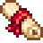
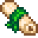
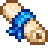
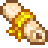

Artefatos
| Imagem | Nome | Descrição | Preço | Local |
|  | Pergaminho dos anões | Um pergaminho amarelado escrito na linguagem dos anões. Este aqui possui um laço vermelho. | 1 ouro |
Nível da Mina 1-20 Slime Verde (Floresta Secreta) |
|  | Pergaminho dos anões II | Um pergaminho amarelado escrito na linguagem dos anões. Este aqui possui um laço verde. | 1 ouro |
Morcego de Gelo (Nível da Mina 40-65) Espirito da Terra (Nível da Mina 40-79) Slime Azul (Floresta Secreta ou Minas) |
|  | Pergaminho dos anões III | Um pergaminho amarelado escrito na linguagem dos anões. Este aqui está enrolado em um laço azul. | 1 ouro |
Nível da Mina 40+ Morcego de Gelo (Nível da Mina 40-65) Morcego de Fogo (Nível da Mina 81+) Slime Azul (Floresta Secreta ou Minas) Caverna da Caveira |
|  | Pergaminho dos anões IV | Um pergaminho amarelado escrito na linguagem dos anões. Este aqui está enrolado com um laço dourado. | 1 ouro |
Qualquer Monstro (Minas) Usando uma enxada no solo (Nível da Mina 81+) Larva Mutante (Toca do Inseto Mutante) |
 |
Ponta de flecha | Uma ponta de flecha bruta utilizada para caça. | 40 ouros |
Montanha (2%) Floresta (2%) Ponto de Ônibus (2%) |
 |
Espada antiga | São os restos de uma espada antiga. A maior parte da lâmina enferrujou, mas o punho é muito bem desenhado. | 100 ouros |
Floresta (1%) Montanha (0.8%) Baú de Pescaria |
 |
Estrela-do-mar ressecada | Uma estrela-do-mar do oceano primordial. Parece estar incrivelmente bem conservada! | 40 ouros |
Praia (10%) Baú de Pesca |